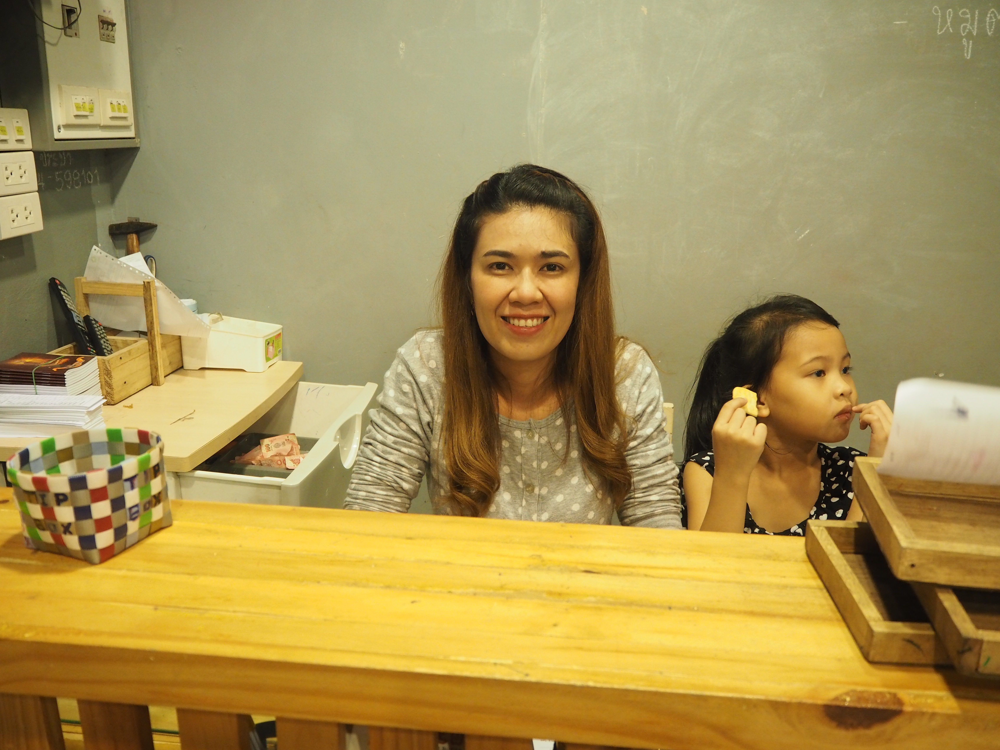

- โจ๊กหม้อเติบ -

เจ้าของร้าน : พี่แก้มและพี่น้อง
ร้านของครอบครัว เปิดมาได้เกือบปี เกิดมาจากความชื่นชอบในโจ๊ก และต้องการเกิดความโดดเด่นทำให้ได้เกิดโจ๊กหม้อเติบขึ้นมา ที่ร้านจะมีเมนูหลากหลายให้เลือก มีการผสมกันเป็นชุดซึ่งแตกต่างไปจากร้านโจ๊กเดิมๆ
ที่นี่โดดเด่นด้วยเรื่องโจ๊กที่มีหลากหลายหน้า เริ่มที่เราต้องเลือกก่อนว่าจะทานที่ร้านหรือนำกลับบ้านต่อมาเลือกรสชาติที่เราสนใจ ในส่วนนี้มีอะไรน่าลองเยอะแยะ เช่น โจ๊กธรรมดา โจ๊กต้มยำ มาม่า และเกาเหลา ได้เวลาเพิ่มทอปปิ้งตามใจฉัน จัดใหญ่จัดหนักตามที่เราอยากกิน ไม่ว่าจะกุ้งแม่น้ำ ปลาแซลมอน สัตว์ทะเล เนื้อหมู เนื้อไก่ ไข่ไก่/ไข่เค็ม ผักทั้งหลายและถ้าใครชื่นชอบการทานปาท่องโก๋ควบคู่กับโจ๊กก็มีให้ได้เลือกเพิ่มไป หรือหากใครคิดไม่ออกจะทานแบบไหน ก็มีแบบเซ็ตให้ได้สั่งกันมีทั้งแบบเซ็ตเล็ก เซ็ตใหญ่ เซ็ตเฮลตี้ มีหลากหลายจนต้องได้ไปสัมผัสเอง


คะแนนรีวิว :
Service :
เวลาเปิด-ปิดร้าน ทุกวัน: 17:00 - 00:00
ช่วงราคา (ต่ำกว่า 15 บาท)
จำนวนที่นั่ง 120 ที่นั่ง
FreeWiFi
รับจัดงานข้างนอกและจองล่วงหน้า
Tel : 085-2564128